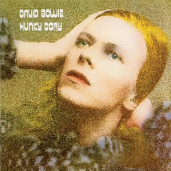

|  |
LetraChangesDavid Bowie |
I still don't know what I was waiting for
And my time was running wild
A million dead-end streets
Every time I thought I'd got it made
It seemed the taste was not so sweet
So I turned myself to face me
But I've never caught a glimpse
Of how the others must see the faker
I'm much too fast to take that test
Ch-ch-ch-ch-changes
(Turn and face the strange)
Ch-ch-changes
Don't want to be a richer man
Ch-ch-ch-ch-changes
(Turn and face the strange)
Ch-ch-changes
Just gonna have to be a different man
Time may change me
But I can't trace time
II watch the ripples change their size
But never leave the stream
Of warm impermanence and
So the days float through my eyes
But still the days seem the same
And these children that you spit on
As they try to change
their worlds
Are immune to your consultations
They're quite aware of what they're going through
Ch-ch-ch-ch-changes
(Turn and face the strange)
Ch-ch-changes
Don't tell them to grow up and out of it
Ch-ch-ch-ch-changes
(Turn and face the strange)
Ch-ch-changes
Where's your shame
You've left us
up to our necks in it
Time may change me
But you can't trace time
Strange fascination, fascinating me
Changes are taking the pace
I'm going through
Ch-ch-ch-ch-Changes
(Turn and face the strange)
Ch-ch-changes
Oh, look out you rock 'n rollers
Ch-ch-ch-ch-changes
(Turn and face the strange)
Ch-ch-changes
Pretty soon now you're gonna get older
Time may change me
But I can't trace time
I said that time may change me
But I can't trace time